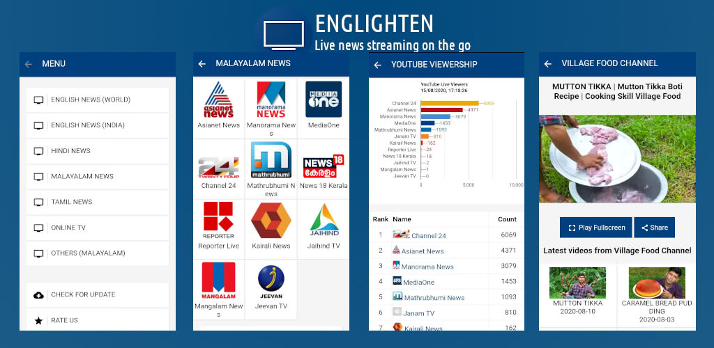

Enlighten TV
Live news streaming on the Go
FAQ
1. How do you collect news?
We don't collect or report any news as primary source. We just gather YouTube live streaming of official news channels.
2. What's the purpose of app - if you just share the YouTube content?
We focus on specific audience, living on a small geography and gather content interesting for them. Also, we showcases some demographics which helps users to understand popularity of the selected channels.